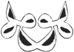

Two

Birds lift into the air
expecting to be safe
–Baha’uddin Walad
AL-MA’ARIF, THE DROWNED BOOK II 2:13-14
Via Purgativa
She was a cutter rig named My Jo. A single mast sailboat marooned at Marina Paraíso on Isla Mujeres off the edge of Mayan Mexico. It was March, only one month earlier, when Shams and I had been looking to work for passage—anywhere. The boat had a broken autopilot and a captain named Charlie on the hunt for two things: an open weather window and an easygoing crew to help motor up to Jacksonville. Shams and I came on board and all the elements fell into place. Captain Charlie and his hound dog Sirius invited first mates Gabrielle, Shams and I on board. She, a quiet nineteen-year-old from Quebec City and we, two twenty-nine-year olds from the West Coast Salish.
“You WILL work for passage,” declared Captain Charlie in a confident, italicized, Kentucky twang.
His flash of grey eyes like glowing coals, all six foot four and two hundred muscular pounds of him. At fifty, he still had a head full of brown hair, was deeply tanned pink and towering, and Sirius never left his side, teeth exposed at all times.
“I’ve only let you onto my boat because I think I can get along with you. If not, I WILL whip your ass.”
We left early morning at seven and I had the first shift. Steered the forty feet of fiberglass, wood and metal out the harbour without so much as a prayer into Caribbean wind—the audacity. We launched in such a quickness that even our families had no clue of our crossing. Mujeres to Miami by way of the Gulf of Mexico. Weather predictions showed easy twelve-knot winds from the southeast.
But Gulf Stream swift. She run both way. Fastest ocean current on Earth bringing fire from south to north with power greater than all the world’s rivers. And as soon as we reached open waters, the wind gathered strength. Within half an hour we were at thirty-, forty-, fifty-knot gale winds! Furious waves hit the boat from twenty feet above. Fear and seasickness set in strong as we took turns—one steering and another keeping watch in three-hour shifts.
Back on Isla Mujeres, Shams and I had spent weeks in the open-air marina bar getting drunk on Dos Equis with sailors, or sometimes quietly bored with each other under the thatch-roof waiting for a job opening, a black cat for company and tree frogs the only high-pitched sounds. Late one night, a gang of kinky French couples in their retirement years—the kind willing to go gladly on their way assuming a gentle fifteen-knot wind from the southeast—invited us onto their boat for wine and sausages. Loud, mocking laughter came from deep within their bottles.
I kept saying, “We can work for passage to the U.S. or Europe or—”
“Tu n’as aucune idée, ma belle. Il n’y a pas deux vagues qui se ressemblent,” said one of the drunken Frenchmen. You have no idea, my dear. No two waves are alike.
All around us now, rain and titan blue swells struck the boat with high white caps and squall lines keeping us at permanent forty-five-degree angle with death. We ran the engine hard against the rain to keep death at bay.
Sometime before sunrise that first night, I caught sight of a freighter on the horizon. Hailed them on the radio to announce our presence. They did not answer. I vomited. Hailed again. Nothing. Were they not looking? They seemed almost on a collision course and the storm had made us all but invisible on busy Yucatán shipping lanes.
Ten minutes had passed by the time the freighter hailed back and promised to give us wide girth to starboard, but I had already adrenalined and expelled even that which I did not have.
The wind roared and the boat soared on its diagonal side all next day and night again. The motion lifted toxins out of me like clockwork as I steered. The brightest pockets of star constellations in the night sky made no difference. I was exhilarated and ill among the swells, high rollers and increasing wind speed in the middle of Absolute. Don’t take your eyes off the compass or depth gauge even in three a.m. night!
What is freedom on my feet doing? Living a life for joy and abandon worse than any I could ever encounter or survive. Whether you paint your body or your palm, there is some human water lost somewhere. Freedom, my friend, is on this page. Take one step toward it and it runs toward You.
Visible and invisible, these journeys are meant for the perpetual moment to be met without hesitation, only with passion and verve. Ha! Let us see what the nauseous night brings.
Just then, dolphins jumped into a sacred air stampede at the bow of the boat in pearl moonlight. Two, three, a dozen angels in flight. Proper wild luminosity. Astonishment. The clear light when matter is both at its peak and disappears, a precursor to tears, the inner ocean escaped.
It was early afternoon when I rose next day from the bunk that I shared with Shams. Below deck, every crevice, cabinet, hook, shelf and pumpable toilet served essential functions, but none of it assured me.
I climbed up the narrow steps to find Captain Charlie at the helm and Sirius at his side. Without a word, he pointed at something behind me, and I turned to see the silver underbellies of tiny birds above—actually, flying fish in self-propelled leaps from port to starboard, blue to blue, mahi-mahi to frigate. Their wing-like fins at once extended and completely still in the middle of air.
Alongside the boat, shiny striped skipjack tuna moved in unified schools one fathom down. Up ahead, gelatinous Portuguese man o’ wars dove at our constant arrival. Later, when we neared Cuba, hundreds of tiny phosphorescent moon jellies floated up to the surface. Captain Charlie grabbed the binoculars and spotted a small boat stationed beside a freighter in the distance and, “Make sure they don’t see us, or they’ll kill us all,” he warned.
Waves crashed into the cockpit as I steered in the dark again another night, another storm, all of it one liquid hallucination. Muscles pushed to exhaustion, upper arms screaming from steering with the windvane against high gusts, thighs and knees on fire from holding onto anything solid as the boat sliced through international waters on a perpetual slant. Somewhere in the constant sickness, the confusion of waves, pots and pans screaming below deck, I gave up.
No land in sight, no sight in dark. Empty, staring at the compass when we had barely reached the middle of the Gulf. This is when the meek in me says: this is too much, I’m doing this, but really, I cannot. O Ancestors, where are your ceremonies? Please, I need them now.
Captain Charlie offered, “This is when you learn that there’s nothing you can do. It is what it is. It is what it is.”
When the waves are one-eyed giants and the boat is at angle for days and you have no rest from hanging on for dear life and heaving every hour on the hour, soaking wet, purge it all—even that which you do not have.
Time is of no consequence. Freedom the only goal. This is a reminder of the Middle Passage and our unique relationship to water and drowning. Keep your face to the wind and your eyes on the horizon. Look for dolphins to give good morning and good night. Mourn the human beings that were thrown overboard, Ancestors. If necessary, gather yourself into the sea so as to have no more fear of it.
Shams relieved me from duty at six in the morning. He was distant and calm, my opposite. I tried to sleep. There was none.
After seventy-two hours we reached the Dry Tortugas. Shams made me a processed cheese sandwich, and I devoured it. The only thing I had digested since leaving dry land three days before. We dropped anchor per instructions and stayed the night. A thin veil of salt had coated us completely. The chrome of the boat was jeweled with it. Mineral stars. Our skin itched with quartz.
“O the beauty of the world,” sighed Shams, and all the day was crystalline.
That night, we bathed in the clear place where the Gulf of Mexico meets North Atlantic. Took a cockpit shower together in the waxing moonlight of the deserted Middle Key. Shams caught my breath in the saline wind. We had come from highest squalls and without warning, everything had turned calm, as if something between us had died.
Next morning, I could just make out the first red rays of daylight on the eastern horizon. We took our time motoring past Marquesas Keys and the weather cleared completely by the time we docked at Key West to replenish supplies.
“I don’t date women my own age because at fifty, they’ve all let themselves go,” said Captain Charlie between cockpit pushups. I counted two hundred.
Later, the captain’s baritone came from inside the belly of the boat, “Who wants to play a game of chess? I’m gonna open up a can o’ whoop ass.”
After anchoring overnight at Boot Key, the seventh day was easy. We hoisted sails and the huge, freestanding genoa, caught a meditative wind, and I lay on bagged sails letting the sun do its business on my brown skin. That night we ate fresh mackerel on deck under a shameless vermillion sunset coming into Rodriguez Key.
On the tenth day we arrived at Miami under full moon, a city which made no sense at all. Its pastels and plastics and neon skyline pushed us quickly out. I tossed full packets of birth control pills and Accutane in the motel bin and we jumped into air.
I can’t remember how we chose Paris. Perhaps Shams had chosen it and I had simply chosen him. In the end, it was nothing but a suspension of disbelief. An Atlantic’s upward curve. That blue hip viewed from the sky—strewn and unrestrained. A new silence between us now, a continent before us. Spring rains came down hard as we landed at Charles de Gaulle.
Shams and I moved quickly toward our own Babel, the tower leaning into our arrival. The end always near. The change of heart cannot be disguised.